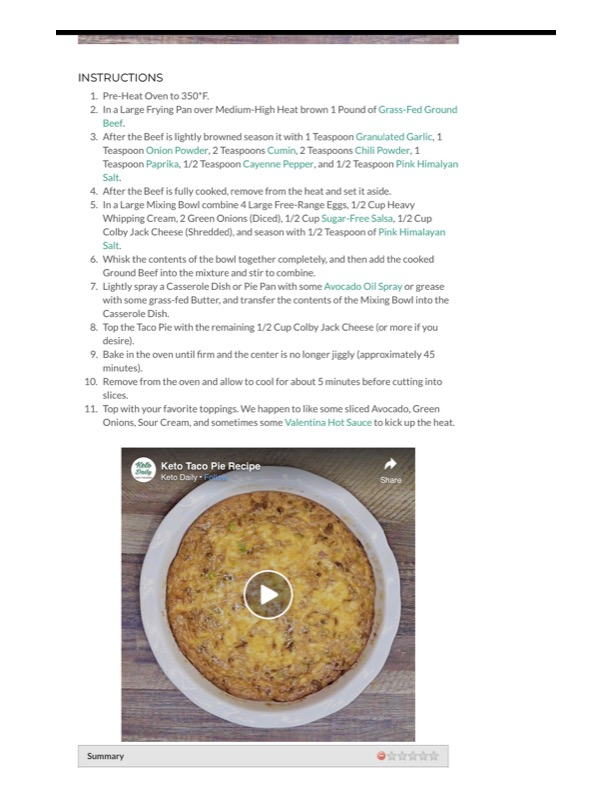

Keto Taco Pie Recipe

Original cookbook page 79
Cook: approximately 45 minutes
Ingredients
- 1 Pound Grass-Fed Ground Beef
- 1 Teaspoon Granulated Garlic
- 1 Teaspoon Onion Powder
- 2 Teaspoons Cumin
- 2 Teaspoons Chili Powder
- 1 Teaspoon Paprika
- 1/2 Teaspoon Cayenne Pepper
- 1/2 Teaspoon Pink Himalayan Salt (for beef seasoning)
- 4 Large Free-Range Eggs
- 1/2 Cup Heavy Whipping Cream
- 2 Green Onions (Diced)
- 1/2 Cup Sugar-Free Salsa
- 1 Cup Colby Jack Cheese (Shredded, divided)
- 1/2 Teaspoon Pink Himalayan Salt (for egg mixture)
- Avocado Oil Spray or grass-fed Butter (for greasing)
Instructions
- Pre-Heat Oven to 350°F.
- In a Large Frying Pan over Medium-High Heat, brown 1 Pound of Grass-Fed Ground Beef.
- After the Beef is lightly browned, season it with 1 Teaspoon Granulated Garlic, 1 Teaspoon Onion Powder, 2 Teaspoons Cumin, 2 Teaspoons Chili Powder, 1 Teaspoon Paprika, 1/2 Teaspoon Cayenne Pepper, and 1/2 Teaspoon Pink Himalayan Salt.
- After the Beef is fully cooked, remove from the heat and set it aside.
- In a Large Mixing Bowl combine 4 Large Free-Range Eggs, 1/2 Cup Heavy Whipping Cream, 2 Green Onions (Diced), 1/2 Cup Sugar-Free Salsa, 1/2 Cup Colby Jack Cheese (Shredded), and season with 1/2 Teaspoon of Pink Himalayan Salt.
- Whisk the contents of the bowl together completely, and then add the cooked Ground Beef into the mixture and stir to combine.
- Lightly spray a Casserole Dish or Pie Pan with some Avocado Oil Spray or grease with some grass-fed Butter, and transfer the contents of the Mixing Bowl into the Casserole Dish.
- Top the Taco Pie with the remaining 1/2 Cup Colby Jack Cheese (or more if you desire).
- Bake in the oven until firm and the center is no longer jiggly (approximately 45 minutes).
- Remove from the oven and allow to cool for about 5 minutes before cutting into slices.
- Top with your favorite toppings. We happen to like some sliced Avocado, Green Onions, Sour Cream, and sometimes some Valentina Hot Sauce to kick up the heat.
Recipe #79 from collection